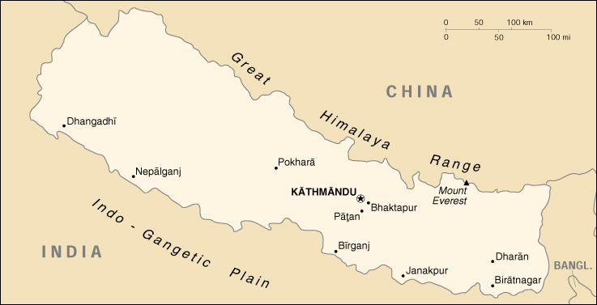

{kind=link}


| Nepal |
|
|  | |
| Introduction |
Background: In 1951, the Nepalese monarch ended the century-old system of rule by hereditary premiers and instituted a cabinet system of government. Reforms in 1990 established a multiparty democracy within the framework of a constitutional monarchy.
| Geography |
Location: Southern Asia, between China and India
Geographic coordinates: 28 00 N, 84 00 E
Map references: Asia
Area:
total:
140,800 sq km
land:
136,800 sq km
water:
4,000 sq km
Area - comparative: slightly larger than Arkansas
Land boundaries:
total:
2,926 km
border countries:
China 1,236 km, India 1,690 km
Coastline: 0 km (landlocked)
Maritime claims: none (landlocked)
Climate: varies from cool summers and severe winters in north to subtropical summers and mild winters in south
Terrain: Terai or flat river plain of the Ganges in south, central hill region, rugged Himalayas in north
Elevation extremes:
lowest point:
Kanchan Kalan 70 m
highest point:
Mount Everest 8,850 m (1999 est.)
Natural resources: quartz, water, timber, hydropower, scenic beauty, small deposits of lignite, copper, cobalt, iron ore
Land use:
arable land:
17%
permanent crops:
0%
permanent pastures:
15%
forests and woodland:
42%
other:
26% (1993 est.)
Irrigated land: 8,500 sq km (1993 est.)
Natural hazards: severe thunderstorms, flooding, landslides, drought, and famine depending on the timing, intensity, and duration of the summer monsoons
Environment - current issues: deforestation (overuse of wood for fuel and lack of alternatives); contaminated water (with human and animal wastes, agricultural runoff, and industrial effluents); wildlife conservation; vehicular emissions
Environment - international agreements:
party to:
Biodiversity, Climate Change, Desertification, Endangered Species, Hazardous Wastes, Law of the Sea, Marine Dumping, Nuclear Test Ban, Ozone Layer Protection, Tropical Timber 83, Tropical Timber 94, Wetlands
signed, but not ratified:
Marine Dumping, Marine Life Conservation
Geography - note: landlocked; strategic location between China and India; contains eight of world's 10 highest peaks
| People |
Population: 24,702,119 (July 2000 est.)
Age structure:
0-14 years:
41% (male 5,187,805; female 4,860,583)
15-64 years:
56% (male 7,056,784; female 6,746,293)
65 years and over:
3% (male 422,314; female 428,340) (2000 est.)
Population growth rate: 2.34% (2000 est.)
Birth rate: 33.83 births/1,000 population (2000 est.)
Death rate: 10.41 deaths/1,000 population (2000 est.)
Net migration rate: 0 migrant(s)/1,000 population (2000 est.)
Sex ratio:
at birth:
1.05 male(s)/female
under 15 years:
1.07 male(s)/female
15-64 years:
1.05 male(s)/female
65 years and over:
0.99 male(s)/female
total population:
1.05 male(s)/female (2000 est.)
Infant mortality rate: 75.93 deaths/1,000 live births (2000 est.)
Life expectancy at birth:
total population:
57.84 years
male:
58.3 years
female:
57.35 years (2000 est.)
Total fertility rate: 4.68 children born/woman (2000 est.)
Nationality:
noun:
Nepalese (singular and plural)
adjective:
Nepalese
Ethnic groups: Newars, Indians, Tibetans, Gurungs, Magars, Tamangs, Bhotias, Rais, Limbus, Sherpas
Religions:
Hindu 90%, Buddhist 5%, Muslim 3%, other 2% (1981)
note:
only official Hindu state in the world
Languages: Nepali (official), over 20 other languages divided into numerous dialects
Literacy:
definition:
age 15 and over can read and write
total population:
27.5%
male:
40.9%
female:
14% (1995 est.)
People - note: refugee issue over the presence in Nepal of approximately 96,500 Bhutanese refugees, 90% of whom are in seven United Nations Office of the High Commissioner for Refugees (UNHCR) camps
| Government |
Country name:
conventional long form:
Kingdom of Nepal
conventional short form:
Nepal
Data code: NP
Government type: parliamentary democracy
Capital: Kathmandu
Administrative divisions: 14 zones (anchal, singular and plural); Bagmati, Bheri, Dhawalagiri, Gandaki, Janakpur, Karnali, Kosi, Lumbini, Mahakali, Mechi, Narayani, Rapti, Sagarmatha, Seti
Independence: 1768 (unified by Prithvi Narayan Shah)
National holiday: Birthday of His Majesty the King, 28 December (1945)
Constitution: 9 November 1990
Legal system: based on Hindu legal concepts and English common law; has not accepted compulsory ICJ jurisdiction
Suffrage: 18 years of age; universal
Executive branch:
chief of state:
King BIRENDRA Bir Bikram Shah Dev (succeeded to the throne 31 January 1972 following the death of his father King MAHENDRA Bir Bikram Shah Dev, crowned king 24 February 1975); Heir Apparent Crown Prince DIPENDRA Bir Bikram
head of government:
Prime Minister Krishna Prasad BHATTARAI (since NA May 1999)
cabinet:
Cabinet appointed by the monarch on the recommendation of the prime minister
elections:
none; the monarch is hereditary; following legislative elections, the leader of the majority party or leader of a majority coalition is usually appointed prime minister by the monarch
Legislative branch:
bicameral Parliament consists of the National Council (60 seats; 35 appointed by the House of Representatives, 10 by the king, and 15 elected by an electoral college; one-third of the members elected every two years to serve six-year terms) and the House of Representatives (205 seats; members elected by popular vote to serve five-year terms)
elections:
House of Representatives - last held 3 and 17 May 1999 (next to be held NA May 2004)
election results:
House of Representatives - percent of vote by party - NC 37.3%, CPN/UML 31.6%, NDP 10.4%, NSP 3.2%, Rastriya Jana Morcha 1.4%, Samyukta Janmorcha Nepal 0.8%, NWPP 0.5%, others 14.8%; seats by party - NC 113, CPN/UML 69, NDP 11, NSP 5, Rastriya Jana Morcha 5, Samyukta Janmorcha Nepal 1, NWPP 1
Judicial branch: Supreme Court (Sarbochha Adalat), chief justice is appointed by the monarch on recommendation of the Constitutional Council, the other judges are appointed by the monarch on the recommendation of the Judicial Council
Political parties and leaders: Communist Party of Nepal/United Marxist-Leninist or CPN/UML [Madhav Kumar NEPAL, general secretary]; Marxist-Leninist [Sahana PRADHAM, chairman, Bam Dev GAUTAM, general secretary]; National Democratic Party or NDP (also called Rastriya Prajantra Party or RPP) [Surya Bahadur THAPA]; Nepal Sadbhavana (Goodwill) Party or NSP [Gajendra Narayan SINGH, president]; Nepal Workers and Peasants Party or NWPP [Narayan Man BIJUKCHHE, party chair]; Nepali Congress or NC [Girija Prasad KOIRALA, party president, Sushil KOIRALA, general secretary]; Rastriya Jana Morcha [Chitra Bahadur K. C., chairman]; Samyukta Janmorcha Nepal [Lila Mani POKHAREL, general secretary]
Political pressure groups and leaders: Maoist guerrilla-based insurgency; numerous small, left-leaning student groups in the capital; several small, radical Nepalese antimonarchist groups
International organization participation: AsDB, CCC, CP, ESCAP, FAO, G-77, IBRD, ICAO, ICFTU, ICRM, IDA, IFAD, IFC, IFRCS, ILO, IMF, IMO, Intelsat, Interpol, IOC, ISO (correspondent), ITU, MONUC, NAM, OPCW, SAARC, UN, UNCTAD, UNESCO, UNIDO, UNIFIL, UNMIBH, UNMIK, UNMOP, UNMOT, UNTAET, UPU, WFTU, WHO, WIPO, WMO, WToO, WTrO (applicant)
Diplomatic representation in the US:
chief of mission:
Ambassador Damodar Prasad GAUTAM
chancery:
2131 Leroy Place NW, Washington, DC 20008
telephone:
[1] (202) 667-4550
FAX:
[1] (202) 667-5534
consulate(s) general:
New York
Diplomatic representation from the US:
chief of mission:
Ambassador Ralph FRANK
embassy:
Pani Pokhari, Kathmandu
mailing address:
use embassy street address
telephone:
[977] (1) 411179
FAX:
[977] (1) 419963
Flag description: red with a blue border around the unique shape of two overlapping right triangles; the smaller, upper triangle bears a white stylized moon and the larger, lower triangle bears a white 12-pointed sun
| Economy |
Economy - overview: Nepal is among the poorest and least developed countries in the world with nearly half of its population living below the poverty line. Agriculture is the mainstay of the economy, providing a livelihood for over 80% of the population and accounting for 41% of GDP. Industrial activity mainly involves the processing of agricultural produce including jute, sugarcane, tobacco, and grain. Production of textiles and carpets has expanded recently and accounted for about 80% of foreign exchange earnings in the past three years. Agricultural production is growing by about 5% on average as compared with annual population growth of 2.3%. Since May 1991, the government has been moving forward with economic reforms, particularly those that encourage trade and foreign investment, e.g., by reducing business licenses and registration requirements in order to simplify investment procedures. The government has also been cutting expenditures by reducing subsidies, privatizing state industries, and laying off civil servants. More recently, however, political instability - five different governments over the past few years - has hampered Kathmandu's ability to forge consensus to implement key economic reforms. Nepal has considerable scope for accelerating economic growth by exploiting its potential in hydropower and tourism, areas of recent foreign investment interest. Prospects for foreign trade or investment in other sectors will remain poor, however, because of the small size of the economy, its technological backwardness, its remoteness, its landlocked geographic location, and its susceptibility to natural disaster. The international community's role of funding more than 60% of Nepal's development budget and more than 28% of total budgetary expenditures will likely continue as a major ingredient of growth.
GDP: purchasing power parity - $27.4 billion (1999 est.)
GDP - real growth rate: 3.4% (1999 est.)
GDP - per capita: purchasing power parity - $1,100 (1999 est.)
GDP - composition by sector:
agriculture:
41%
industry:
22%
services:
37% (1998)
Population below poverty line: 42% (1995-96 est.)
Household income or consumption by percentage share:
lowest 10%:
3.2%
highest 10%:
29.8% (1995-96)
Inflation rate (consumer prices): 11.8% (FY98/99 est.)
Labor force:
10 million (1996 est.)
note:
severe lack of skilled labor
Labor force - by occupation: agriculture 81%, services 16%, industry 3%
Unemployment rate: NA%; substantial underemployment (1999)
Budget:
revenues:
$536 million
expenditures:
$818 million, including capital expenditures of $NA (FY96/97 est.)
Industries: tourism, carpet, textile; small rice, jute, sugar, and oilseed mills; cigarette; cement and brick production
Industrial production growth rate: NA%
Electricity - production: 1.17 billion kWh (1998)
Electricity - production by source:
fossil fuel:
5.13%
hydro:
94.87%
nuclear:
0%
other:
0% (1998)
Electricity - consumption: 1.212 billion kWh (1998)
Electricity - exports: 72 million kWh (1998)
Electricity - imports: 196 million kWh (1998)
Agriculture - products: rice, corn, wheat, sugarcane, root crops; milk, water buffalo meat
Exports: $485 million (f.o.b., 1998), but does not include unrecorded border trade with India
Exports - commodities: carpets, clothing, leather goods, jute goods, grain
Exports - partners: India 33%, US 26%, Germany 25% (FY97/98)
Imports: $1.2 billion (f.o.b., 1998)
Imports - commodities: gold, machinery and equipment, petroleum products, fertilizer
Imports - partners: India 31%, China/Hong Kong 16%, Singapore 14% (FY97/98)
Debt - external: $2.4 billion (1997)
Economic aid - recipient: $411 million (FY97/98)
Currency: 1 Nepalese rupee (NR) = 100 paisa
Exchange rates: Nepalese rupees (NRs) per US$1 - 68.784 (January 2000), 68.253 (1999), 65.976 (1998), 58.010 (1997), 56.692 (1996), 51.890 (1995)
Fiscal year: 16 July - 15 July
| Communications |
Telephones - main lines in use: 236,816 (January 2000)
Telephones - mobile cellular: NA
Telephone system:
poor telephone and telegraph service; fair radiotelephone communication service and mobile cellular telephone network
domestic:
NA
international:
radiotelephone communications; microwave landline to India; satellite earth station - 1 Intelsat (Indian Ocean)
Radio broadcast stations: AM 6, FM 5, shortwave 1 (January 2000)
Radios: 840,000 (1997)
Television broadcast stations: 6 (1998)
Televisions: 130,000 (1997)
Internet Service Providers (ISPs): NA
| Transportation |
Railways:
total:
101 km; note - all in Kosi close to Indian border
narrow gauge:
101 km 0.762-m gauge
Highways:
total:
13,223 km
paved:
4,073 km
unpaved:
9,150 km (April 1999)
Ports and harbors: none
Airports: 45 (1999 est.)
Airports - with paved runways:
total:
5
over 3,047 m:
1
1,524 to 2,437 m:
3
914 to 1,523 m:
1 (1999 est.)
Airports - with unpaved runways:
total:
40
1,524 to 2,437 m:
2
914 to 1,523 m:
9
under 914 m:
29 (1999 est.)
| Military |
Military branches: Royal Nepalese Army, Royal Nepalese Army Air Service, Nepalese Police Force
Military manpower - military age: 17 years of age
Military manpower - availability:
males age 15-49:
6,108,424 (2000 est.)
Military manpower - fit for military service:
males age 15-49:
3,174,809 (2000 est.)
Military manpower - reaching military age annually:
males:
287,032 (2000 est.)
Military expenditures - dollar figure: $44 million (FY96/97)
Military expenditures - percent of GDP: 0.9% (FY96/97)
| Transnational Issues |
Disputes - international: over approximately 96,500 Bhutanese refugees in Nepal
Illicit drugs: illicit producer of cannabis for the domestic and international drug markets; transit point for opiates from Southeast Asia to the West